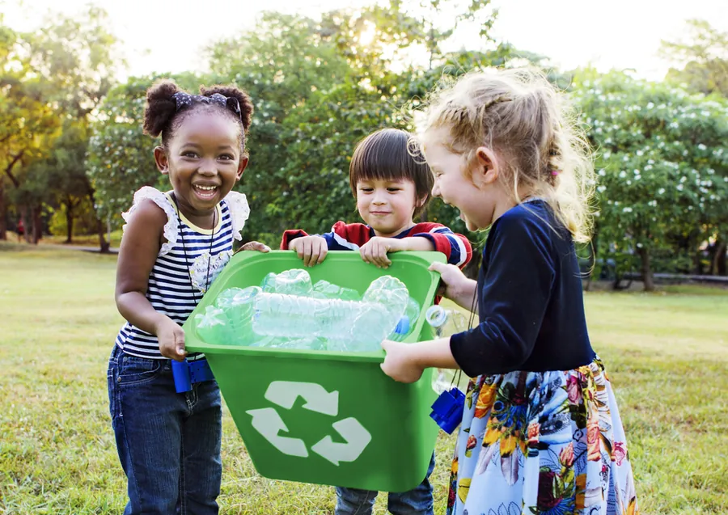

Answers about donations, volunteering, projects and partnerships.
Online via UPI, cards, net banking or wallets on our Donate page. Every gift is receipted instantly and qualifies for 80G tax deduction in India.
82% goes directly to field programs, 12% to fundraising and 6% to administration. Quarterly breakdowns are published openly on our blog.
Yes! Monthly giving is our most powerful model. Pick a plan on our Donation Plans page — cancel anytime, no questions asked.
Instantly, by email. Indian donations receive 80G certificates; international donors receive a formal acknowledgment for their records.
Absolutely! Join as a field volunteer, skills-based volunteer (design, coding, teaching) or remote supporter. Sign up via the Contact page.
As little as 4 hours a month. Weekend drives, weekday teaching slots and fully remote options are all available.
Through field assessments, community consultations and a scoring model based on urgency, scale and sustainability. Local leaders co-sign every project.
Live progress bars on each project page, plus monthly impact emails with photos, data and field stories. Donors above ₹2,500/month get quarterly video calls.
Through CSR funding, employee volunteering, payroll giving or cause-marketing campaigns. Write to partners@stackly.org and our team will respond within 2 working days.
Yes — registered as a non-profit trust in India with 80G and 12A certifications, independently audited every year since 2015.
Yes — ₹1,000/month covers a child's education, healthcare and nutrition. You'll receive letters, photos and annual progress reports.
Still have questions?
Contact Our Team